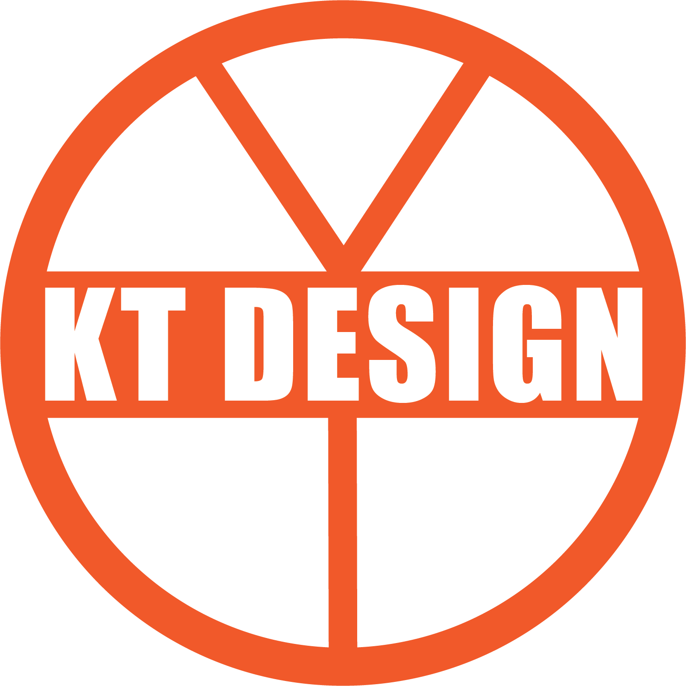

Hello! My name is Khang Nguyen Tran (Khang Tran). I am from Vietnam and I have been living in Ottawa for 2 years. I am a student of Algonquin College - IMM program.I graduated from a university in my hometown (4-years Corporate Communication), followed by 1 year post secondary program (Event Management) at Algonquin College. Currently, I am studying Integrated Media Management at Algonquin College with the duration of 1 year and I will finish my education in April 2020. I like music, design, reading, swimming and animals. For the future, I want to look for a job in media field which is related to design. I can also work as an event planner and I am trying my best to learn designing skills from the IMM course to support my experiences and maybe become a good designer as well. I used to work as an event staff and volunteer and I am learning for new skills from school (designing skills). I am willing to learn new knowledge, adaptable, creative and a good communicator as well.
KT Design is the name of my business. Through KT Design, I receive request of customers and turn their ideas into reality. Although, it is only a personal business for now but I will find a way to develop it in the future. At the moment, I only take requests online and discuss with customers through email. KT Design will be the best if you need to do something with a touch of graphic application (Photoshop, Illustrator) or if you want to create a video with modern effect and last but not least, I can help you to take great photos and edit them for you to seize your moments. Besides all of that, KT Design can also help its clients in basic web design.
